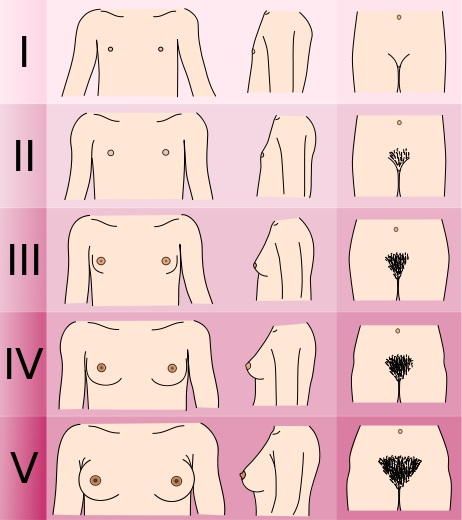

首页
首页 返回
返回| 乳房 | 阴毛 | |
|---|---|---|
| Ⅰ期(青春期前) | 仅乳头凸出 | 无 |
| Ⅱ期 | 乳房、乳头凸起，乳晕直径扩大 平均年龄：9.8岁 |
长而稀疏，黑色，分布于大阴唇 平均年龄：10.5岁 |
| Ⅲ期 | 乳房及乳晕继续增大，两者无界限 平均年龄：11.2岁 |
增粗、卷曲、颜色加深，阴阜出现稀疏毛发 平均年龄：11.4岁 |
| Ⅳ期 | 乳晕、乳头进一步凸起于乳房表面 平均年龄：12.1岁 |
成年人毛发，浓密，但仅限于阴阜 平均年龄：12岁 |
| Ⅴ期 | 乳晕回降，与乳房弧度连续 平均年龄：14.6岁 |
成年人毛发及分布 平均年龄：13.7岁 |
说明
青春期为第二性征开始发育和获得性生殖能力的时期。女性第二性征发育以乳房发育为先，继而出现阴毛、腋毛。月经初潮通常晚于第二性征发育，此时已具有生育能力。
